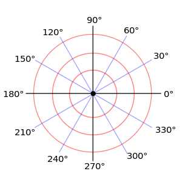

LE CONICHE POLARI
In matematica, il sistema di coordinate polari è un sistema di
coordinate bidimensionale nel quale ogni punto del piano è identificato
da un angolo e da una distanza da un punto fisso detto polo.
Il sistema di coordinate polari è utile specialmente nei casi in cui le
relazioni tra due punti possono essere espresse più facilmente in
termini di angoli e di distanza; nel più familiare sistema di
coordinate cartesiane, o sistema di coordinate rettangolari, tale
relazione può essere espressa solamente tramite le funzioni
trigonometriche.
Un sistema di coordinate polari è in corrispondenza biunivoca con un
sistema di coordinate cartesiane, ossia ad un vettore di coordinate
cartesiane ne corrisponde uno e uno solo in coordinate polari.
Siccome il sistema di coordinate è bidimensionale, ogni punto è
determinato da due coordinate polari: la coordinata radiale e quella
angolare. La prima, di solito identificata con la lettera r, denota la
distanza del punto da un punto fisso detto polo (equivalente
all'origine del sistema cartesiano). La coordinata angolare,
solitamente denotata con la lettera greca θ, è anche detta angolo
azimutale ed identifica l'angolo che la retta a 0° deve spazzare in
senso antiorario per andare a sovrapporsi a quella che congiunge il
punto al polo.
.
Progetto creato da Della Regina, Andreato, Livieri della classe 4C